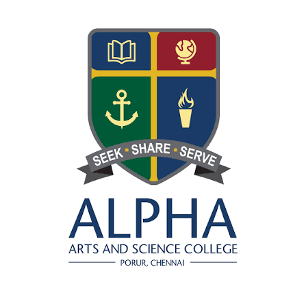

ALPHA ARTS AND SCIENCE COLLEGEAlpha Arts and Science College (AASC) is run by the Alpha Educational Society, a non-profit educational body registered under the societies registration act, 1860. The College, started in the year 1996, is a private, unaided, co-educational arts and science institution approved by the Government of Tamilnadu with permanent affiliation to the University of Madras and accredited by NAAC. The college is affiliated to the University of Madras with Choice Based Credit System and follows the semester pattern with mandatory extension activities, value education and soft skills. The Under Graduate programmes are for duration of three years leading to Degrees awarded by the University of Madras on successful completion of academic requirements and passing the University examinations prescribed for the course during the six semesters under Choice Based Credit System (CBCS). The Quality Management System of this Minority Institution confirms to ISO standards 9001:2015. AASC offers 9 Undergraduate programmes and 2 Post graduate programmes and is equipped with suitable infrastructural facilities to aid the teaching-learning process. The Institution, being affiliated to the University of Madras, follows the Choice Based Credit System and Semester pattern with mandatory extension activities, value education and soft skills. The Under Graduate programmes are for duration of three years leading to Degrees awarded by the University of Madras on successful completion of academic requirements and passing the University examinations prescribed for the course during the six semesters under Choice Based Credit System (CBCS). This Institution is an intellectual destination that challenges conventional thinking and stimulates passion to redefine learning. Alpha invokes and instills a sense of inspiration in students to achieve more and get to the higher benchmarks.
Objective of the Training and Placement cell: a. To provide placements to all candidates based on their area of Interest and Eligibility. b. To provide need based training to all students in the areas of technical skills, personality enrichment and Communication through Training Programs, Mock Interviews, Group Discussions, Quiz etc c. To maintain a good Institution-Industry rapport. The Placement Team: Training and Placements are coordinated by the Placement team of the College which is headed by a Placement Convenor. In addition there are Placement Coordinators for every department who are selected on rotational basis every year. The Placement Convenor, Ms. Geetha Ravi, has been handling the Placements of the College since 2011.Head of the Department of French, she is bestowed with strong people skills which helps her to maintain a cordial relationship with all HR within the Industry. The Placement Coordinators have all updated information of their students, their academic performance, contact details, interests etc in a Database. The Placement coordinator counsels, guides and motivates the students of her department towards self preparedness and active participation in the Drive.